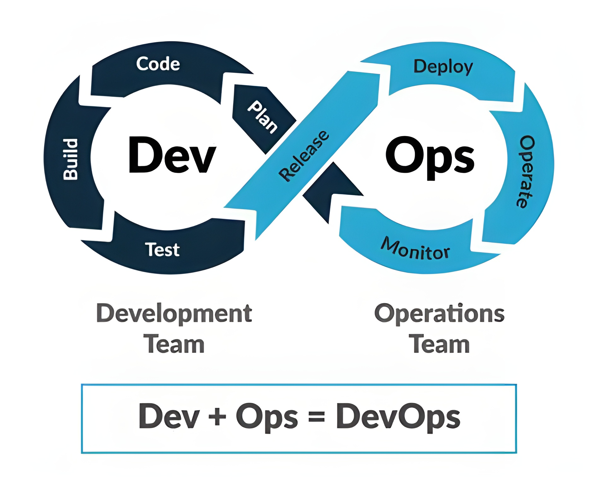

Collaboration between
Software Development
and IT Operations
Extension for Agile Process
DevOps Objectives
Faster Time to Market
Improved Quality
Continuous Feedback Loop

K
K
Future Trends and Case Studies
serverless data base
is a cloud-based database management system that automatically scales
computing resources based on the application’s needs without
requiring the user to manage the underlying server infrastructure.
case study: Netflix
blockchain integration
Integrating blockchain technology into backend systems can bring about
enhanced security transparency, and efficiency.
case study: IBM,HSBC
cross platform development
refers to creating server-side applications that can interact with multiple types of
client applications This approach ensures that the backend logic is consistent across all platforms.
case study: Google, Pinterest